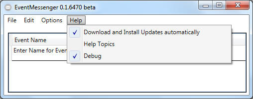

Main Window - Help

- "Check for Updates":
- If checked, the software will contact the main project site to check
for any newer version of the software. If any, the user will be asked if
the update should be applied.
- "Help":
- "Console":
- The Console enables the
user to verify the configuration of the events and added responses
without having a complete online lockings system available.
 BE AWARE: The EventMessenger is unable to retrieve events from the
locking system software while the console window is activated.
BE AWARE: The EventMessenger is unable to retrieve events from the
locking system software while the console window is activated.